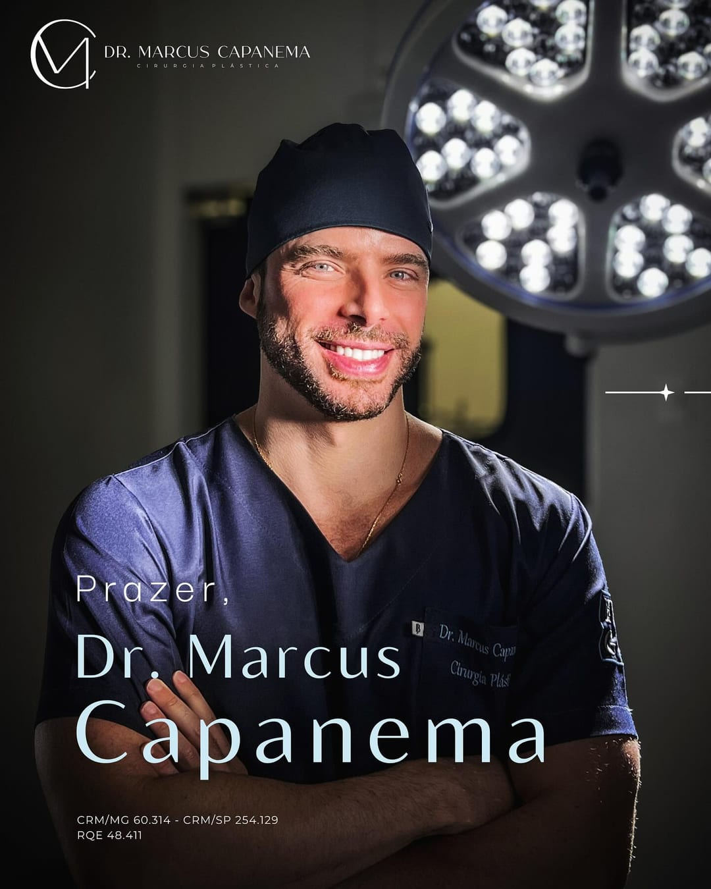
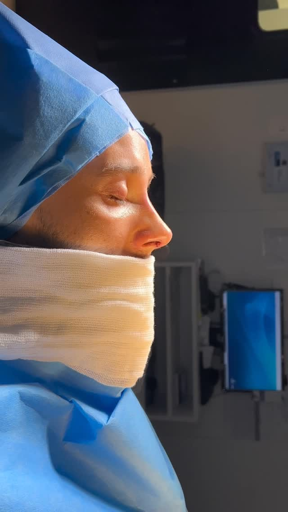
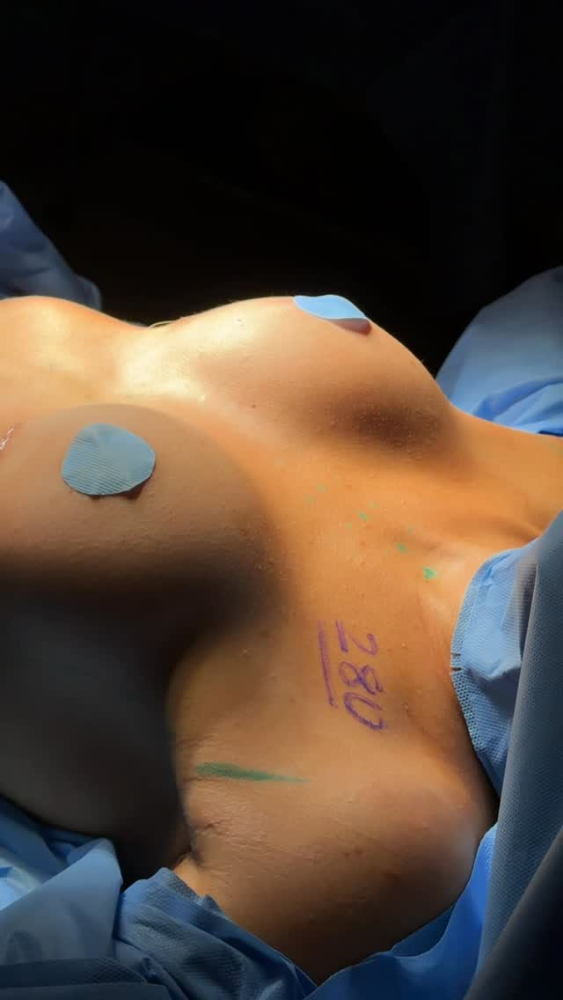

Início/Procedimentos
O que o Dr. Marcus realiza
Procedimentos realizados pelo Dr. Marcus Capanema
Rinoplastia, estética facial avançada, blefaroplastia, lifting facial deep plane e prótese de mama, com planejamento individualizado e foco em resultados naturais, seguros e elegantes.
A atuação do Dr. Marcus concentra-se em procedimentos que exigem precisão, técnica e olhar estético refinado. Cada caso é avaliado de forma personalizada, com orientação clara sobre indicação, recuperação e expectativas reais de resultado.



Procedimento em destaque
Rinoplastia
Para muitos pacientes, o nariz é o ponto que mais chama atenção no rosto, e, quando algo incomoda ali, isso pode refletir diretamente na autoestima. A rinoplastia é a cirurgia plástica do nariz, indicada para quem deseja harmonizar o rosto, ajustar proporções e, em muitos casos, melhorar também a respiração.
É um dos principais focos da atuação do Dr. Marcus Capanema e, quando necessário, é realizada em conjunto com a Dra. Allyne Capanema, otorrinolaringologista formada pela USP, ampliando o cuidado estético e funcional.
Resultado esperado: um nariz em equilíbrio com o restante da face, com aparência natural e sem padrão artificial.
O que pode ser tratado na rinoplastia:
- dorso alto (“ossinho” ou giba nasal);
- ponta caída ou muito arredondada;
- largura excessiva do nariz;
- assimetrias;
- desvios e alterações estruturais que comprometem a respiração.
Como o procedimento é planejado:
- avaliação detalhada do rosto e do nariz em diferentes ângulos;
- entendimento do que mais incomoda o paciente;
- estudo das possibilidades reais de mudança;
- explicação clara sobre técnica, cicatriz, recuperação e fases do inchaço.
Sem centro cirúrgico
Estética facial avançada
Nem todo rejuvenescimento precisa começar por uma cirurgia. Em muitos casos, um plano bem feito de procedimentos faciais já é capaz de transformar a aparência com naturalidade.
A estética facial avançada reúne técnicas voltadas para prevenção e tratamento dos sinais de envelhecimento, sem necessidade de centro cirúrgico. No consultório, o Dr. Marcus utiliza:
O objetivo não é transformar o rosto, e sim suavizar sinais de cansaço, recuperar contornos perdidos e preservar a expressão natural.
Recursos utilizados
- Toxina botulínica – para suavizar rugas dinâmicas e prevenir marcas profundas;
- Preenchimentos – para repor volume em regiões como olheiras, malar, lábios, queixo e mandíbula;
- Bioestimuladores de colágeno – para melhora gradual da firmeza e da qualidade da pele;
- Tecnologias complementares – associadas conforme a necessidade de cada caso.
Cirurgia das pálpebras
Blefaroplastia
Muitas pessoas sentem que parecem cansadas o tempo todo, mesmo descansando bem. Em grande parte dos casos, o motivo está nas pálpebras.
A blefaroplastia é a cirurgia que trata o excesso de pele e, quando indicado, o acúmulo de gordura nas pálpebras superiores e/ou inferiores.
Ela é indicada para pacientes que apresentam:
- pele sobrando sobre os olhos;
- bolsas de gordura evidentes;
- dificuldade para maquiar a região;
- sensação de olhar constantemente cansado.
Objetivo da blefaroplastia:
- devolver frescor ao olhar;
- manter o formato natural dos olhos;
- evitar excessos que possam alterar de forma artificial a expressão do paciente.
Pontos explicados na consulta:
- tipo de técnica indicada;
- posicionamento das cicatrizes;
- tempo estimado de recuperação;
- cuidados para otimizar o resultado ao longo do tempo.
Rejuvenescimento profundo
Lifting facial deep plane
Quando a flacidez da face já está mais avançada, procedimentos superficiais podem não entregar o efeito de rejuvenescimento que o paciente espera.
O lifting facial deep plane é uma técnica de rejuvenescimento que atua em planos profundos da face, reposicionando estruturas internas e não apenas “esticando” a pele. É uma abordagem indicada para pacientes que apresentam:
O deep plane se diferencia porque trabalha em planos profundos, preservando um aspecto mais natural; tende a proporcionar resultados mais duradouros; busca um rejuvenescimento global, e não apenas localizado.
Na consulta, o Dr. Marcus avalia se o paciente já tem indicação para lifting facial ou se outras técnicas menos invasivas ainda podem ser suficientes naquele momento.
Indicado para pacientes que apresentam:
- queda do terço médio da face;
- sulcos nasogenianos marcados;
- perda de definição do contorno da mandíbula;
- flacidez mais importante na região do pescoço.
Cirurgia de mama
Prótese de mama
Para muitas mulheres, o formato e o volume das mamas influenciam diretamente na autoconfiança, na relação com o próprio corpo e até na escolha de roupas.
A cirurgia de prótese de mama é indicada para:
- aumentar o volume das mamas;
- recuperar formato após gestação, amamentação ou emagrecimento;
- corrigir assimetrias;
- devolver projeção em casos de mamas naturalmente pouco desenvolvidas.
Objetivo principal: obter um resultado proporcional ao corpo da paciente, com toque e formato naturais.
Como é definido o tamanho da prótese
O tamanho ideal não é escolhido apenas por número de ml. O Dr. Marcus considera:
- medidas do tórax e da base das mamas;
- estrutura corporal da paciente;
- desejo de volume;
- equilíbrio com o restante do corpo;
- segurança a longo prazo.
Também são discutidos:
- tipo de prótese;
- plano de colocação;
- cicatriz provável;
- tempo de recuperação.
Avaliação personalizada
Ainda em dúvida sobre qual procedimento fazer?
É comum chegar ao consultório com uma queixa geral, “não gosto do meu nariz”, “me sinto envelhecida”, “não me reconheço mais nas fotos”, sem saber exatamente qual procedimento é o mais indicado.
A consulta é o momento em que a dúvida começa a virar clareza e a clareza vira decisão segura.
Na avaliação com o Dr. Marcus, o foco é:
- entender o que mais incomoda hoje;
- analisar a face ou o corpo de forma global;
- explicar, em linguagem acessível, as opções possíveis;
- mostrar vantagens, limitações e tempo de recuperação;
- construir um plano de tratamento coerente com a rotina e o momento de vida do paciente.
Onde são realizados
Procedimentos realizados em Belo Horizonte e São Paulo
Os procedimentos cirúrgicos são organizados com estrutura completa em Belo Horizonte, com agenda periódica de atendimento também em São Paulo, facilitando o acesso de pacientes de diferentes cidades. Na primeira consulta, a equipe orienta sobre:
- exames necessários;
- datas prováveis para cirurgia;
- tempo de permanência recomendado na cidade;
- retornos de pós-operatório.